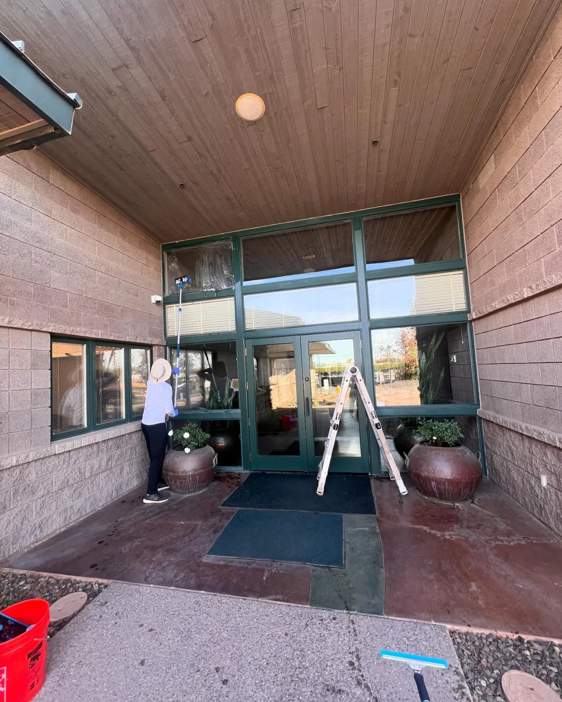
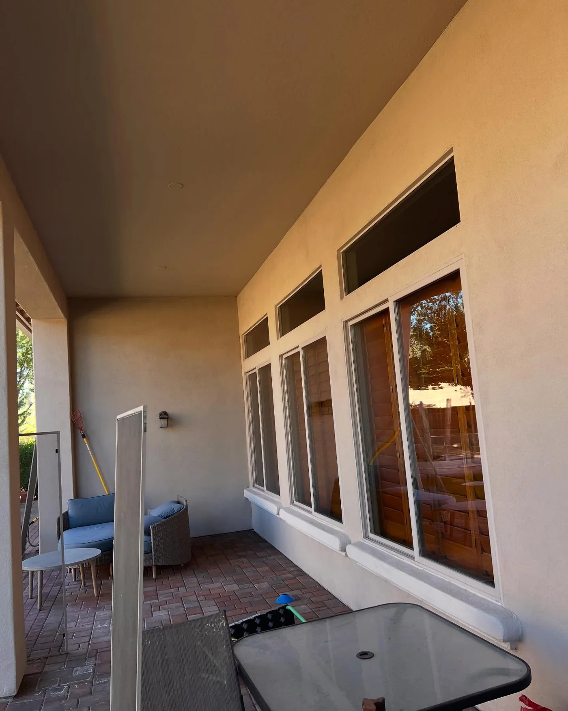
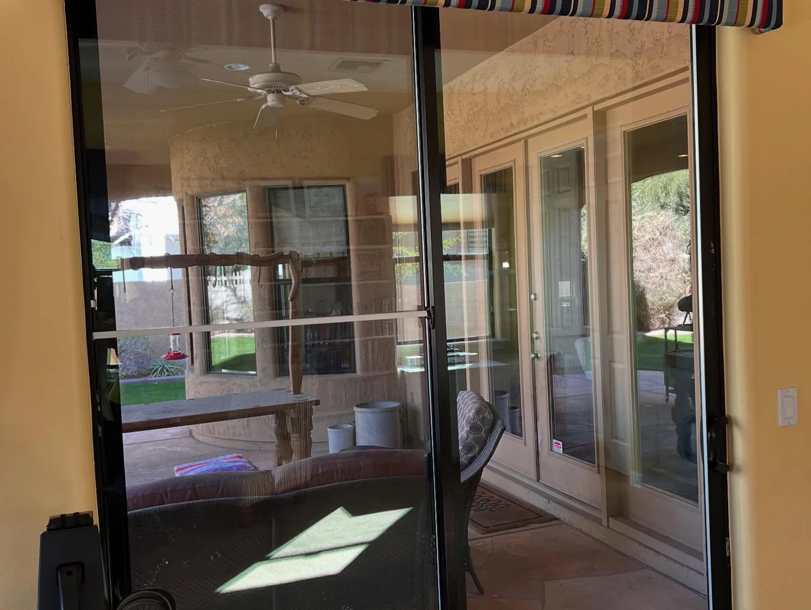

You tell us what needs cleaning
Call or text and describe the property. How many storeys, roughly how much glass, and whether you want the outside only or both sides.
Window cleaning, pressure washing and gutters for Phoenix homes and businesses.


Interior and exterior glass, tracks, sills and screens. Purified water through a fed pole reaches second storey panes with no ladder marks on the wall and no spotting once it dries.
Homes and businesses. One visit or on a schedule.

Driveways, walkways, patios, pool decks and block walls. Desert dust and hard water staining come off without chewing up the surface underneath.
Pressure matched to the surface, every time.

Debris cleared, downspouts flushed, and the run checked for sag and separation while we are up there. Monsoon season is a bad time to find out a gutter is packed.
Checked and reported before we leave.
Four steps, and you have paid nothing by the end of the second one.
Call or text and describe the property. How many storeys, roughly how much glass, and whether you want the outside only or both sides.
We would rather see the glass than guess at it, so you get a price from a real look at the property.
No charge for thisPurified water through a fed pole for the panes a ladder should not reach, and pressure matched to the surface on anything we wash.
Glass, tracks, sills and screens, and on a gutter job the run gets checked for sag and separation while we are up there. Anything we find, you hear about.
Four things that decide whether glass still looks clean a week later.
Purified water through a fed pole gets to second storey panes from the ground. No ladder feet in the planting and no marks down the wall.
The water is purified before it touches the glass, so there are no minerals sitting on the pane waiting to show up as the sun takes the water off.
A concrete driveway and a painted block wall do not take the same pressure, so they do not get the same pressure.
We come and look for nothing, and you have the number in your hand before anybody unrolls a hose.
Every photograph on this page is our own work on a real property. No stock, nothing staged.






Three reels straight from @pane_solutions_llc. Tap one to play it.
“My windows have never looked better. Completely streak free.”
“From start to finish their professionalism and attention to detail were outstanding.”
Aminata TC DemaihGoogle review“The team was punctual, professional, and incredibly thorough. They took the time to ensure every window was done right.”
Marcus BayeGoogle review“Answer and his team did a wonderful job doing my windows. Will be using Pane Solutions yearly.”
Gee NayouGoogle review“I took a chance and they did an incredible job, on the spot. Great work, quality service, solid price.”
Michael MorfordGoogle reviewIf yours is not here, call 515.525.4127 and ask. It costs nothing to find out.
Yes. Purified water through a fed pole reaches upper panes from the ground, so there are no ladder marks down the wall and no spotting once the glass dries.
Both. One visit, or on a schedule if you would rather not think about it again.
Nothing. There is no charge to come and look, and you get the price before any work starts.
Pressure is matched to the surface every time. Desert dust and hard water staining come off without chewing up what is underneath.
Yes. A window clean is interior and exterior glass plus the tracks, the sills and the screens.
Every one of them. Real Phoenix properties we have cleaned, straight off our own camera. There is no stock photography anywhere on this page.
Phoenix, Arizona. Tell us where you are and you will get a straight yes or no on the phone.